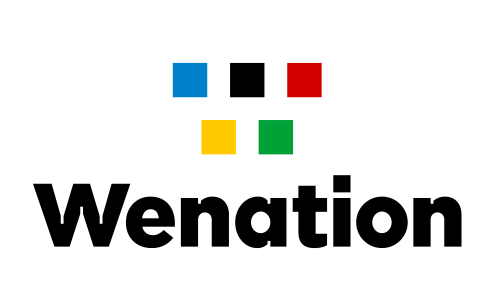
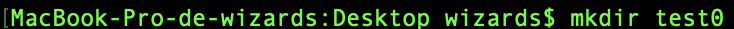
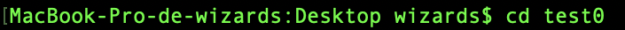
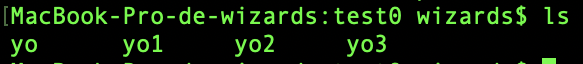
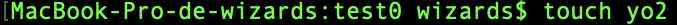

Wizards Technologies fait parti du premier écosysteme d'innovation de Wenation Wedigital.garden est une branche de Wemanity, elle aide les entreprises, dans cette entreprise il y a aussi plusieurs types de personnes. Il y a deux méthodes pour effectuer un projet, la méthode en Waterfall qui consiste que le project owner créer un CDC (Cahier Des Charges) avec ses idées décrite le plus précisément possible puis il devra les dessiner pour l'envoyer au designer qui devras rendre le produit finis. La méthode en boucle qui consiste a que le project owner donne toute les informations a la squad de développeur qui feront le projet en 2 semaines voir plus, puis ils refont 2 semaines ainsi de suite jusqu'au résultat.
Liens important:
Dans l'entreprise:
Squads- Lieux dédiés- Lieux confidentiels- Devloppeurs- UI et UX designers
J'ai pu utilisé le Terminal de commande pendant mon stage. Le terminal de commande a une utilisation plus poussé et plus technique que l'utilisation classique du Mac. Dedans j'ai utilisé quelque commandes comme "mkdir" qui permet de créer un document, "cd" (change directory) qui permet de se déplacer dans les documents a l'aide de leur noms, "ls" qui permet d'afficher tout les fichiers et dossiers dans un emplacement et "man" affiche a quoi correspond chaque commandes precisement.
Les commandes importante:
 mkdir (créer un dossiers)
 cd (parcourir les documents)
 ls (afficher tout les fichiers)
 touch (créer un fichier)
 rm (supprimer un document)
rm (supprimer un document)
Ils m'ont montré l'agile qui est un ensemble d'activités réalisées dans un eorganisation, qui s'inscrivent dans les valeurs et principes du manifeste AGILE comment fonctionne le HTML en détailles comment on modifie la police d'écriture, mettre de la couleur, etc... Wemanity n'est pas qu'en France, elle est aussi dans 4 pays différent.
103 Rue de Grenelle, 75007 Paris
Avenue Arnaud Fraiteur 15-23, 1050 Brussels
21 Rue Glesener, 1651 Luxembourg
Korte vijverberg 2, 2513 AB, Den Haag
?